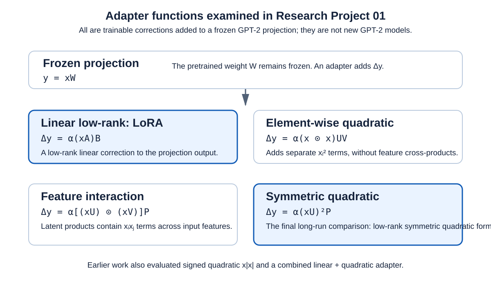
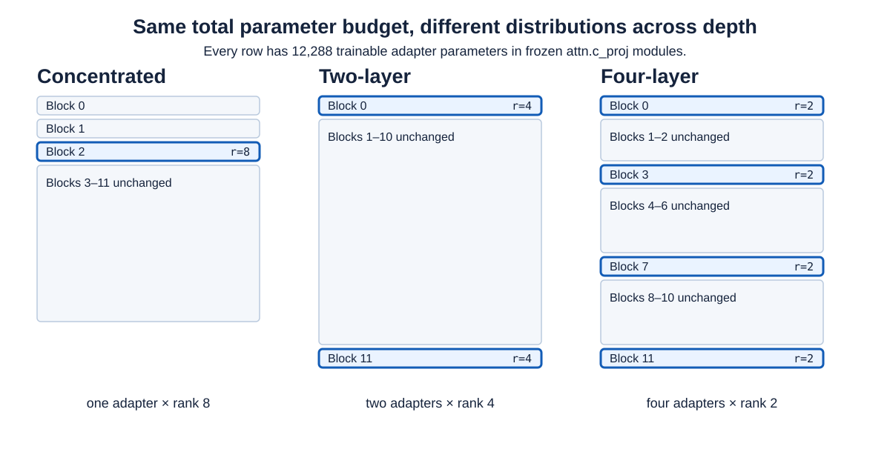

Research Project 01 · Exploratory study
Low-Rank Quadratic Adaptation of GPT-2
Can an explicit, low-rank quadratic correction help adapt a frozen pretrained Transformer with the same small parameter budget used by LoRA?
Adapting a pretrained language model usually does not require training every original weight again. This project keeps GPT-2 Small frozen and learns small modules that correct selected internal projection outputs. LoRA is the appropriate linear baseline: it is compact, widely used, and changes a projection with a low-rank linear map. The central test asks whether a correction that depends quadratically on the incoming activation offers useful extra capacity under a controlled budget.
From a frozen projection to quadratic corrections
Let x be the vector entering a frozen projection and W its pretrained weight. The base operation is y = xW. An adapter contributes a trainable correction Δy, giving y = xW + Δy. It is a correction to a projection inside GPT-2, not a new GPT-2 model trained from scratch.

Final controlled comparison
The final campaign fixes the total adapter budget at 12,288 trainable parameters. The same budget is arranged in three ways: one rank-8 adapter at block 2, two rank-4 adapters at blocks 0 and 11, or four rank-2 adapters at blocks 0, 3, 7, and 11. Each configuration is run for 5,000 optimizer steps with seeds 42, 123, and 456.

See the protocol and data stages → · See validation and held-out results →